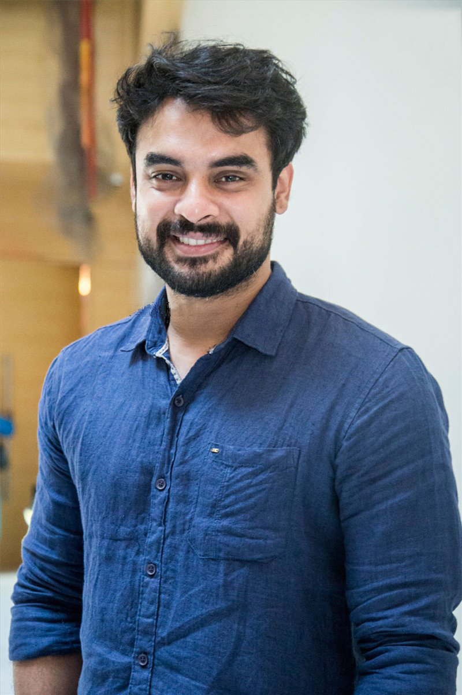

I AM
Tovino Tomas
Indian film actor
Early life
Tovino was born into a Saint Thomas Christian Syro-Malabar Catholic family in Irinjalakuda, Thrissur as the
younger son of Adv. Ellikkal Thomas and Sheela Thomas. His siblings are Tingston Thomas and Dhanya Thomas. He
completed primary schooling from Don Bosco Higher Secondary School, Irinjalakuda[6][7] and Secondary (Plus Two)
schooling from St Mary's Higher Secondary School Irinjalakuda and graduated with bachelor's degree in
electronics and communication engineering from Tamil Nadu College of Engineering, Coimbatore, Tamil Nadu. He was
a part of the handball Team of Don Bosco High School and also helmed as the school leader.[8] He later worked in
Cognizant Technologies[7] as a software engineer. He was active in sports, fitness and modeling.[9]
Career
Tovino Thomas made his acting debut in Prabhuvinte Makkal directed by Sajeev Anthikkad in 2012.[10]
Subsequently, he worked as an assistant director in Roopesh Peethambaran's Theevram. In ABCD: American-Born
Confused Desi (2013) he portrayed the role of the antagonist. Tovino appeared as the lead in the film Koothara
which also featured Mohanlal.[11] He played a lead role in Roopesh Peethambaran's second directorial venture You
Too Brutus.[12]
He has played major roles in the films including 7th Day (2014) and Charlie (2015). In 2015, he portrayed the
role of Perumparambil Appu in the film Ennu Ninte Moideen which was widely appreciated and received critical
acclaim for his performance. He won his first Filmfare Award for Best Supporting Actor for his performance in
Ennu Ninte Moideen.[13]
Tovino in 2016
He played the role of Engineer Thejus Varky in Guppy (2016) which was well received by audiences upon the DVD
and digital release.[14] He won the New Sensational Hero Award at the NAFA 2017 for his performance in the
film.[15] This film was also a breakthrough in his career.
He played the lead role in Oru Mexican Aparatha, Godha, and Mayanadi in 2017. He won the Filmfare Critics Award
for Best Actor and Behindwoods Critics Award for Best Actor for Mayanadi.[16][17] The film was praised for the
way it tackled with sexuality and was included in The Hindu's top 25 Malayalam films of the decade.[18] The same
year he appeared in Ezra in a major supporting role.
In 2018, Tovino Thomas was cast in a major role in Maari 2 with Dhanush which was his Tamil debut.[19] His major
Malayalam releases for the year includes Theevandi, Ente Ummante Peru, and Oru Kuprasidha Payyan. Tovino had
major roles in Lucifer, Uyare and Virus in 2019. His film Uyare was released in South Korea, becoming the first
Malayalam film to do so.[20] His other releases in the year were And the Oscar Goes To..., Luca, Kalki, and
Edakkad Battalion 06.
In 2020, he played the lead role in the crime thriller Forensic with Mamta Mohandas, which received a good
response from the audience and was a major box office success.[21]
In 2021, his first release was Kala which was his second venture as a producer. The film received critical
acclaim for its narrative.[22] Kaanekkaane released in 2021, received a positive response and critical acclaim
for its narrative and performance by its cast.[23] He starred as the titular character in Minnal Murali, which
is the first Malayalam superhero action film, released by Netflix on December 24. He received immense praise for
his work in the movie and the movie was also declared as 'OTT Blockbuster'[24] and surpassed the records of most
viewed Malayalam Film on OTT previously held by Drishyam 2.[25]
His 2022 film Naaradan was critically acclaimed. His upcoming projects are Thallumaala, Neelavelicham, etc.
Personal life
Tovino married his longtime girlfriend, Lidiya at St. Thomas Cathedral, Irinjalakuda, on 25 October 2014. The
duo
had met during their school days and married after nine years[51] The couple has a daughter and a son born in
2016
and 2020 respectively.[52][53]
Tovino had volunteered during 2018 Kerala floods to lead rescue and rehabilitation missions. In 2021, Tovino
received golden visa from Government of UAE[54]
Initiatives
Tovino Thomas was a part of the handball team at Don Bosco High School, Irinjalakuda during his high school
years. As a part of the team, he has participated in junior and sub-junior levels. He was also the team captain
at Don Bosco High School, Irinjalakuda.[55] Tovino had also competed at district and state levels representing
Thrissur during his years when he was active at handball.[56]
Currently, Tovino is active alongside former members of the team to develop the sport in Kerala and is honored
as the goodwill ambassador by Kerala Handball Association.
In 2021, Tovino is announced as the ambassador of the Samoohika Sannadhasena,[57] the community volunteer
program launched by the Government of Kerala. The community volunteer program was launched to tackle natural
disasters by imparting training to volunteers and provide aid to the public in times of crisis. Pinarayi
Vijayan, Chief Minister of Kerala appreciated Tovino's involvement in flood relief activities and noted that his
presence will influence the youth to join in the community volunteer program.[58]
After Mammootty and Mohanlal, Tovino became the third Malayalam film actor to receive the Golden Visa issued by
the United Arab Emirates.[59]